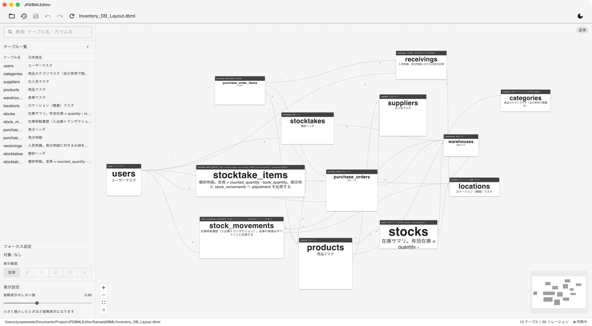

DBML Viewer / Editor
.dbml を開くと、テーブルとリレーションが自動レイアウトの ER 図になります。 検索で絞り込み、つながりだけを追い、書式を壊さずに軽く直す。テキスト編集は使い慣れたエディタのままで。
お使いの OS を選んでください。インストール後は起動時に更新を確認し、自動でアップデートします。
Mac の種類が分からないときは、アップルメニュー →「この Mac について」を開いてください。「チップ」に Apple M… と書かれていれば Apple Silicon 版です。無料・MIT ライセンスで公開しています。

13 テーブル / 25 リレーションの在庫管理スキーマを表示した例
Table / Ref
全体 ER 図
公式パーサ @dbml/core でパースし、全テーブルとリレーションを ELK.js の自動レイアウトで描きます。手で並べ直す必要はありません。
検索
絞り込み
テーブル名とカラム名の両方を検索します。カラムが一致したときは、テーブル内の該当カラムをハイライトします。
N ホップ
近傍フォーカス
テーブルをクリックすると、リレーションでつながるテーブルだけを残します。たどる深さは画面から変更できます。
最小編集
書式を保つ
全体を書き出し直さず、変更した箇所だけを元のテキストに反映します。コメント・並び順・インデントはそのまま残ります。
Cmd+S / Cmd+Z
明示保存と Undo
編集はメモリ上に保ち、保存したときだけファイルに書き込みます。Undo / Redo は回数の上限なしで戻れます。
.jpdbml.json
配置を覚える
テーブル位置やカラム幅は隣に置くサイドカーファイルに保存します。.dbml 本体には見た目の情報を書き込みません。
macOS
.dmg を開き、JPDBMLEditor をアプリケーションフォルダにドラッグします。Windows